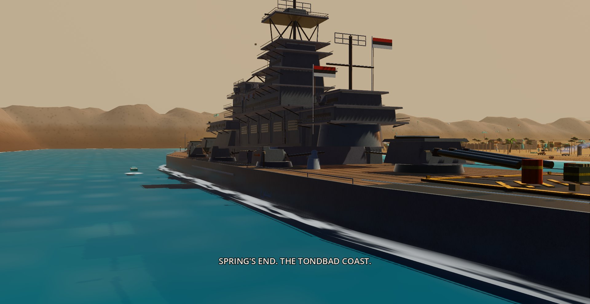

The campaign
Raise the colors. Raise a base.

Spring — the Tondbad coast
THE MUTINY
Ferry the crew ashore, sling the first block tarps, and found a beachhead on the regime's own coast — mine, barracks, motor pool, and the radar that gives you back your map. Toofan-e shen dust walls march on the live wind, flash floods scour the wadi, and somewhere inland the regime holds a downed recon pilot the radio only calls VIPER. Blind the Marshal, cut the power, level Forward Command. By spring's end, the coast is ours.
Next: Operation Tangeh →